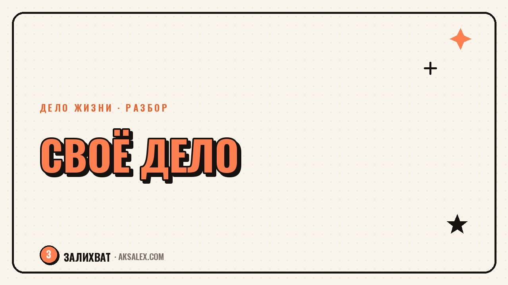

Как найти своё дело, если ты вечно всем помогаешь

Есть люди, к которым все несут свои проблемы - друзья звонят посреди ночи, коллеги просят помочь с отчётом, родственники ждут совета. Ты справляешься, и со стороны кажется, что у тебя всё в порядке. Но если спросить, чего хочешь ты сам, ответ находится не сразу. Привычка заботиться о других настолько прочная, что собственные желания отодвигаются на последнее место в списке и годами туда не доходит очередь.
Почему вечный помощник не видит своё дело
Когда ты с детства или юности привык быть тем, кто решает проблемы других, внимание автоматически направляется наружу. Это не недостаток характера, а выученная роль: однажды забота о ком-то принесла признание и чувство нужности, и мозг закрепил эту стратегию как надёжную. Прислушиваться к себе в этой схеме было некогда - свои желания казались менее важными, чем чужие запросы.
Со временем это превращается в привычку, которую трудно заметить изнутри. Ты не думаешь «я жертвую собой ради других» - ты живёшь так, как кажется правильным, и даже не замечаешь выбора. И своё дело не находится не потому, что его нет, а потому что внимание годами направлено не в ту сторону.
Где проходит граница между призванием помогать и привычкой раствориться
Помощь другим вполне может быть твоим настоящим делом - психологи, врачи, наставники, люди на социальных профессиях живут именно этим и чувствуют в этом смысл. Вопрос не в самой помощи, а в том, выбираешь ли ты её осознанно или не умеешь иначе.
Как отличить одно от другого
- После помощи остаётся энергия или она забрала последние силы - это разные состояния
- Ты выбрал помогать именно этому человеку или не смог отказать - есть разница между желанием и неумением сказать нет
- Если убрать всех, кому ты сейчас помогаешь, у тебя останется дело для себя - или пустота
Как услышать свои желания: три рабочих упражнения
Упражнение 1. Неделя без «да» по умолчанию
На любую просьбу о помощи отвечай не сразу, а после паузы в сутки. За это время замечай, что чувствуешь при мысли согласиться - облегчение или тяжесть. Это честнее любого анализа характера.
Упражнение 2. Список «для меня», а не «для всех»
Выпиши десять дел, которые хочется делать, даже если от них никому, кроме тебя, нет пользы. Многие не могут закончить список с первого раза - это нормальный симптом привычки ставить себя в конец очереди.
Упражнение 3. Разговор с нейросетью о своих интересах
Опиши нейросети свои навыки, то, чем занимался в разные периоды жизни, и попроси найти в этом общие темы без привязки к помощи другим людям. Иногда со стороны проще увидеть закономерность, которую сам не замечаешь.
Сигналы, что пора разделить заботу о других и своё дело
| Помощь как привычка | Помощь как часть дела |
|---|---|
| Соглашаешься, чтобы не разочаровать | Соглашаешься, потому что интересно |
| После - опустошение и раздражение | После - усталость, но есть смысл |
| Сложно вспомнить, чего хочешь сам | Своё дело существует отдельно от чужих нужд |
| Вину чувствуешь при отказе кому угодно | Отказ не вызывает чувства предательства |
Забота о других перестаёт быть твоим делом в тот момент, когда в ней не осталось места для тебя самого.
Первый маленький шаг к своему делу
Не нужно резко отказываться от всех, кто привык на тебя полагаться - это редко получается и часто оборачивается новой виной. Полезнее найти один час в неделю, который принадлежит только тебе и твоему интересу, и защищать именно его, как защищал бы чужую просьбу о помощи.
Через несколько недель такой час станет привычкой не меньше, чем привычка помогать. А дальше из него может вырасти дело - курс, проект, навык, доведённый до уровня, на котором за него платят, или занятие, которое наполняет тебя, а не только окружающих.
Частые вопросы
Что делать с чувством вины, когда начинаешь отказывать?
Вина в начале - естественная реакция на смену привычной роли, а не сигнал, что ты поступаешь неправильно. Она обычно слабеет через несколько недель практики маленьких отказов.
Можно ли совмещать помощь близким и своё дело?
Да, если выделить время и границы заранее - например, определённые часы для чужих просьб и отдельные часы, которые не трогаются ни при каких обстоятельствах.
Как понять, в чём именно моё дело, если я всю жизнь помогал другим?
Посмотри на моменты, где помощь приносила тебе не только чувство нужности, но и реальный интерес к процессу - часто дело прячется именно в той части работы, которая увлекала тебя саму, а не только результат для других.
Что если близкие обижаются на мои отказы?
Обида чаще показывает, что они привыкли к твоей доступности, а не то, что отказ был неправильным - со временем здоровые отношения перестраиваются под новые границы.
Сколько времени нужно, чтобы перестать растворяться в чужих делах?
Первые заметные сдвиги обычно видны через месяц-два регулярной практики маленьких шагов, но полностью переучить привычку можно за более долгий срок - торопиться тут не стоит.
Раз тема оказалась полезной, вот что почитать следующим. Как нейросеть помогает собрать сценарий детского дня рождения: конкурсы, загадки, поздравления за один вечер.
Читать статью →а не вручную